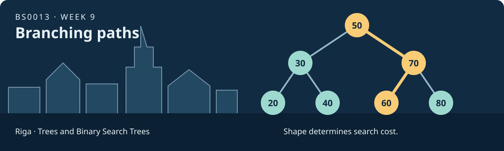

Week 9 · Interactive lesson · Version 1
Trees and Binary Search Trees
Follow the links. Preserve the ordering. Understand the cost of shape.

Essential path: sections 1–8 and 10 (45–60 minutes). C++ examples and level order are optional. Browser models do not execute C++; the assessed lab remains separate.
1. From heaps to trees
Week 8 used an array-backed complete binary heap. A binary tree merely limits nodes to two children; a max-heap adds parent ≥ child ordering and completeness; a BST orders entire subtrees and need not be complete.
Binary tree
30 / \ 80 20
No search-order guarantee.
Max-heap
80 / \ 30 20
Maximum at root; arbitrary search may be linear.
BST
30 / \ 20 80
Strict global ordering enables directional search.
Explicit nodes may be separately allocated; a child is reached through a pointer, not array index arithmetic.
2. Tree anatomy and construction
Root depth = 0 (edges); empty height = 0, leaf height = 1 (nodes). A subtree includes a node and all descendants. Select a node to inspect it. A chain is a valid ordinary BST.
Blue = visited, gold = selected/active, dashed red = detached allocation. N identifiers are stable allocation identities.
3. Search and insertion
Compare at each node and discard the opposite subtree. Insertion follows the same path to a null link, then allocates once. Duplicates change neither size nor ownership. Import a snapshot from the constructor; traces do not change it.
- Start at root
- Compare target with current key
- Follow exactly one child
- Find null owning link
- Allocate new node
- Return result / update size
Symbolic allocations
Try present, absent and duplicate keys. Node visits count each inspected node once, not individual machine comparisons.
4. Traversals
Inorder: left → node → right, yielding ascending keys. Preorder: node → left → right. Postorder: left → right → node, suitable for destruction. Level order uses a FIFO queue. Recursive traces include base cases, calls, emissions and returns. All take Θ(n); DFS needs O(h) stack, BFS O(w) queue, plus Θ(n) output if materialized.
- Enter non-null subtree
- Null: return
- Emit key at selected order
- Enqueue children
- Return from subtree
Output
5. Deletion laboratory
Leaf: clear the owning link. One child: redirect the link to the surviving subtree. Two children: copy the inorder successor (minimum in right subtree), then remove its original allocation. The successor cannot have a left child but can have a right child. Only one allocation is freed. Key copying temporarily creates a duplicate; detaching temporarily leaves an unreachable allocation until freed. Inspect each phase, including changes to root_.
- Start at root
- Compare target
- Choose child
- Find minimum of right subtree
- Copy successor key, not identity
- Identify surviving child or nullptr
- Replace owning link
- Free one node if present
Symbolic allocations
6. Memory and ownership
The allocation tables above show root_, keys and left/right links. N identifiers are symbolic, not machine addresses. Node*& link aliases the actual root or child pointer; assignment changes that pointer, not a local copy. The tree owns each allocation exactly once. Postorder destruction frees children before parents. Shallow copying an owning raw-pointer tree risks double deletion; the lab disables copy and move. Production code should use RAII or standard containers.
In the deletion laboratory's two-child preset, track the target identity and the detached successor. In the traversal laboratory, trace postorder to see the destruction order.
7. Invariant debugger
Local checks are insufficient. Every node inherits exclusive lower and upper bounds from all ancestors. A valid tree is acyclic, has unique owning links, reaches every allocation and agrees with stored size. Balance is not required. Predict the violation, select a node, validate, then reveal a corrected snapshot.
8. Height and complexity laboratory
Same keys, different insertion order. Worst search is O(h); sorted insertion builds a chain in Θ(n²) total time. Uniform random insertion has expected Θ(n log n) construction, not a worst-case guarantee. Median-first gives minimum height for this workload, not future updates.
| Order | Height | Insert visits | Mean hit visits | Max hit | Mean miss visits | Mean depth |
|---|
Hits probe all keys; misses probe every gap (conceptual half-integer positions). Compare Week 10 AVL guarantees.
| Operation | Time | Auxiliary space |
|---|---|---|
| Iterative search | O(h) | O(1) |
| Recursive insert / erase | O(h) | O(h) |
| Traversal / height / destruction | Θ(n) | O(h) |
| Robust validation | Θ(n) on valid input | O(n) identities + O(h) stack |
9. Optional C++20 examples
Standalone demonstrations, not the assessed IntBST implementation. Example index.
tree-representation.cpp
Explicit links with a non-owning three-node view; constant-time child access.
Expected: 50: 30 70
#include <iostream>
struct Record { int key; const Record* left{}; const Record* right{}; };
int main(){ const Record a{30}, b{70}, root{50,&a,&b}; std::cout << root.key << ": " << root.left->key << ' ' << root.right->key << '\n'; }search-trace.cpp
Directional search in a fixed index-based tree; O(h) time, O(1) auxiliary space.
Expected: 50 70 60 found
#include <array>
#include <iostream>
struct Entry { int key, left, right; };
int main(){ const std::array<Entry,4> t{{{50,1,2},{30,-1,-1},{70,3,-1},{60,-1,-1}}}; int i=0; while(i!=-1){const auto& n=t[i]; std::cout<<n.key<<' '; if(n.key==60){std::cout<<"found\n"; return 0;} i=60<n.key?n.left:n.right;} return 1; }reference-to-pointer.cpp
Reference aliases an existing pointer; one pointer assignment, O(1).
Expected: 2
#include <iostream>
int main(){ int a=1,b=2; int* link=&a; int*& alias=link; alias=&b; std::cout<<*link<<'\n'; }traversal-orders.cpp
Visit a fixed tree represented by indices; Θ(n) time and O(h) recursive stack.
Expected: In: 20 30 40 | Pre: 30 20 40 | Post: 20 40 30
#include <array>
#include <iostream>
struct Entry {int key,left,right;};
int main(){const std::array<Entry,3> t{{{30,1,2},{20,-1,-1},{40,-1,-1}}}; auto walk=[&](auto&& self,int i,int order)->void{if(i<0)return;const auto& n=t[i];if(order==0)std::cout<<n.key<<' ';self(self,n.left,order);if(order==1)std::cout<<n.key<<' ';self(self,n.right,order);if(order==2)std::cout<<n.key<<' ';}; for(int o:{1,0,2}){walk(walk,0,o);std::cout<<'\n';}}postorder-lifetime.cpp
RAII members release owned child allocations; Θ(n) destruction, O(h) nested calls. Destructor body logs before member destruction; explicit reset demonstrates child-first reclamation.
Expected: 20 40 30
#include <iostream>
#include <memory>
struct Item{int key;std::unique_ptr<Item> left,right;explicit Item(int k):key(k){} ~Item(){left.reset();right.reset();std::cout<<key<<' ';}};
int main(){auto root=std::make_unique<Item>(30);root->left=std::make_unique<Item>(20);root->right=std::make_unique<Item>(40);root.reset();std::cout<<'\n';}successor-selection.cpp
Minimum of a right subtree in an index representation; O(h) time, O(1) space.
Expected: 60
#include <array>
#include <iostream>
struct Entry{int key,left;};
int main(){const std::array<Entry,3> t{{{90,1},{70,2},{60,-1}}};int i=0;while(t[i].left!=-1)i=t[i].left;std::cout<<t[i].key<<'\n';}ancestor-bounds.cpp
Demonstrate inherited exclusive bounds without arithmetic on keys; constant-time single-node predicate.
Expected: local valid, global invalid
#include <iostream>
#include <optional>
bool allowed(int k,std::optional<int> lo,std::optional<int> hi){return (!lo||k>*lo)&&(!hi||k<*hi);}
int main(){std::cout<<(allowed(40,{},70)?"local valid":"local invalid")<<", "<<(allowed(40,50,70)?"global valid":"global invalid")<<'\n';}ordered-containers.cpp
Ordered unique keys and key/value associations; logarithmic insert/find guarantees.
Expected: 10 20 30 | Ada
#include <iostream>
#include <map>
#include <set>
#include <string>
int main(){std::set<int> keys{30,10,20,10};for(int k:keys)std::cout<<k<<' ';std::map<int,std::string> names{{1,"Ada"}};std::cout<<names.at(1)<<'\n';}10. Knowledge self-check
Thirty original formative questions with immediate explanations. Not a Moodle assessment.